Exportar para fabricar, y en inglés
El proyecto de KiCad y la lista de materiales para JLCPCB salen del esquema, con una guía de dieciséis pasos. Kirchi también se usa en inglés.
Simulador de circuitos gratuito y sin conexión
Mira el voltaje de cada cable y la señal en un osciloscopio de cuatro canales mientras corre. Abre tus circuitos de Proteus, LTspice, KiCad o Falstad. En español o en inglés, sin internet y sin cuenta.
Tráiler
Hasta que lo reproduzcas no se carga nada de YouTube.
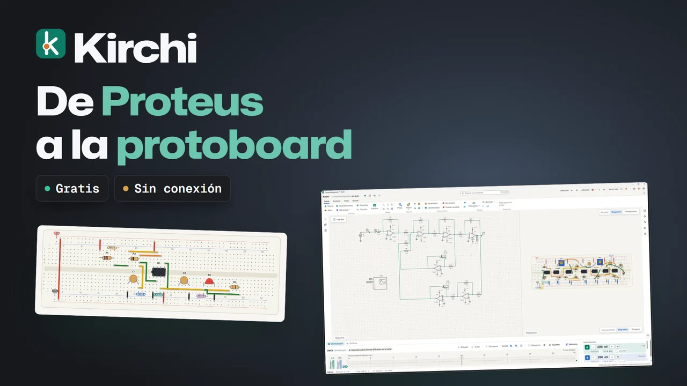
Ver el tráilerVersión por versión
El proyecto de KiCad y la lista de materiales para JLCPCB salen del esquema, con una guía de dieciséis pasos. Kirchi también se usa en inglés.
Placas de 830, 400 y 170 puntos. Con el clic derecho, «Generar protoboard» y «Generar esquema» igualan las dos vistas, y cada agujero marca si la pieza cabe, no cabe o hace corto.
Proteus 8, LTspice, KiCad 7 a 9, Falstad y SPICE, con un informe de lo que se aproximó.
Sensores de luz, temperatura y posición con su perilla en vivo, lógica MSI y los datos de cada pieza: encapsulado, pines y hoja de datos.
Simulación en tiempo real con voltajes en color, osciloscopio, multímetro y generador, y análisis con ngspice.
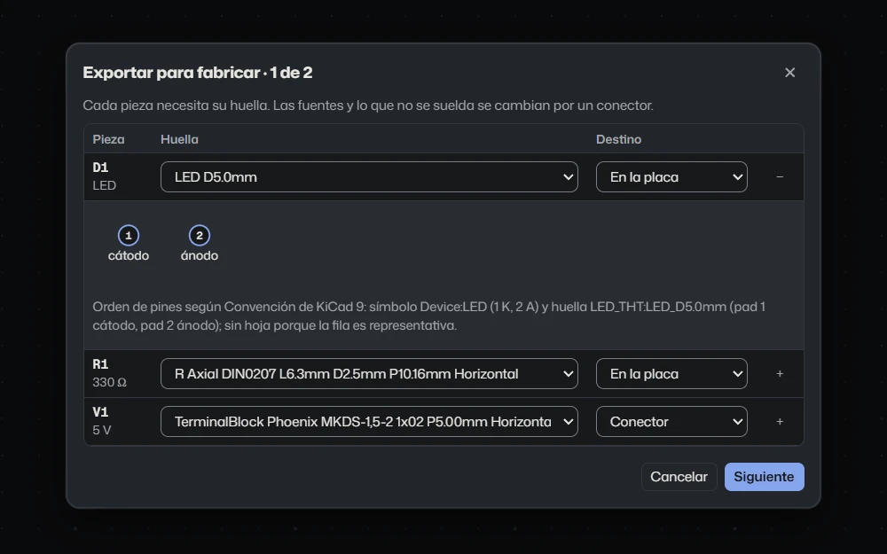
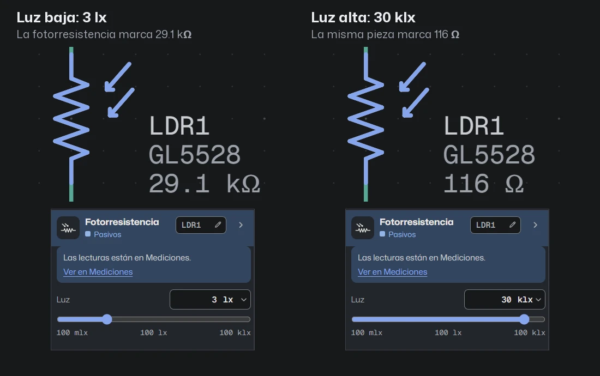
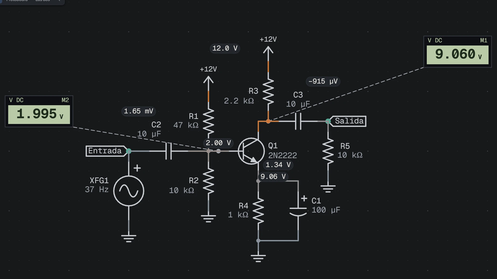
Gratis, sin cuenta, y todo ocurre en tu computadora.
Día a día
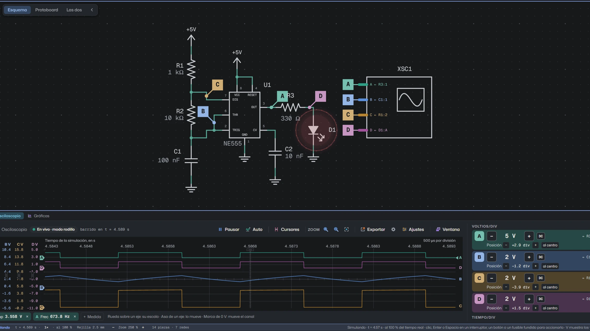
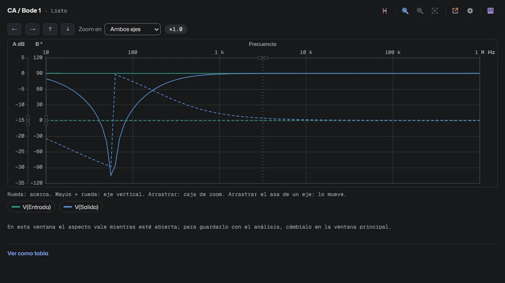
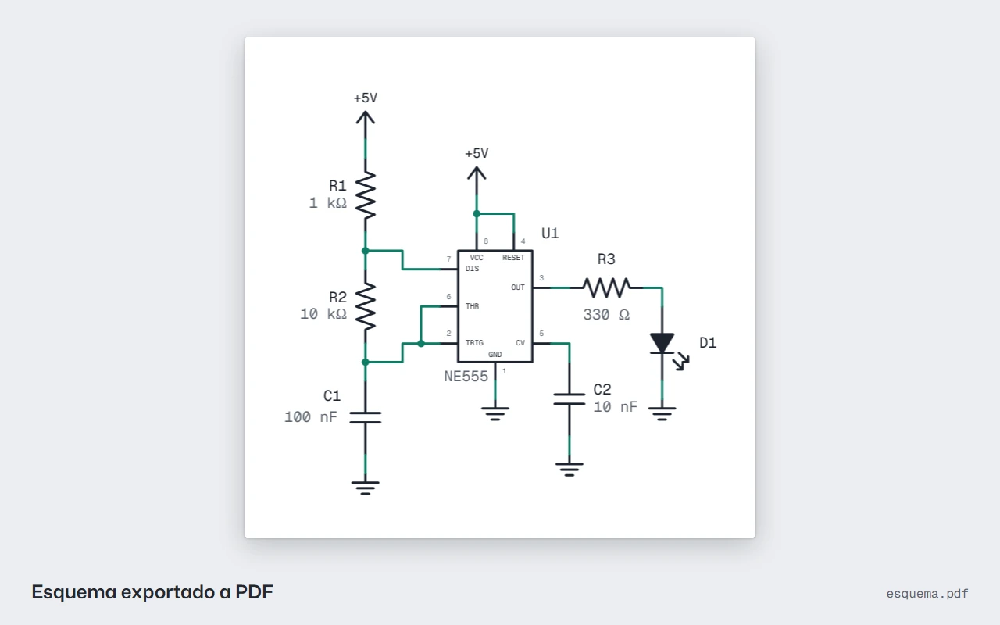
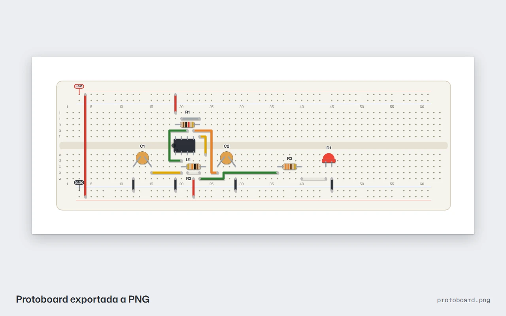
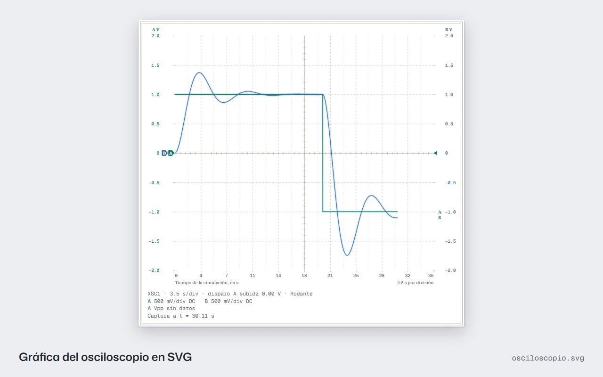
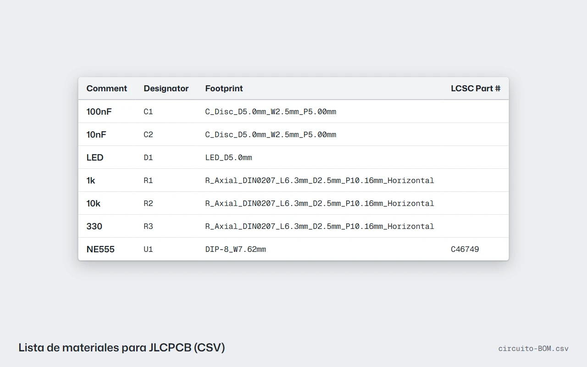
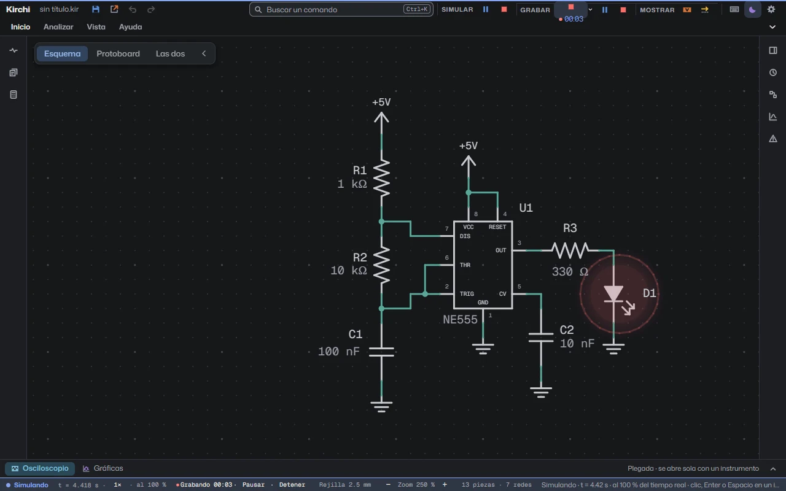
Las láminas cambian solas cada 4 s mientras este paso está activo. Un clic o una tecla las detiene.
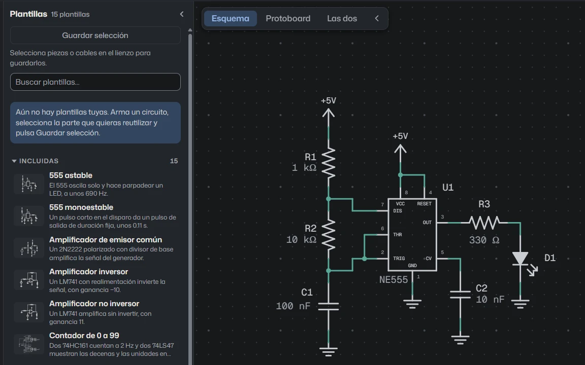
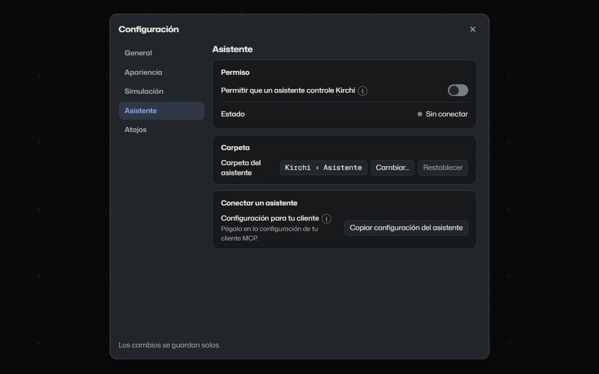
Los cables se pintan según su voltaje y la corriente se mueve por cada rama. Ocho velocidades, de ×10 a ×0.001.
Multímetro, osciloscopio de cuatro canales y, con clic derecho › Medir, puntas sobre cualquier cable.
Bode, Fourier y transitorio, con cursores y rangos que se escriben.
Seis calculadoras muestran la ecuación con tus valores, eligen valores comerciales y colocan el circuito.
Graba la ventana de Kirchi en MP4, con pausa y con o sin micrófono, para explicar un circuito o entregar una práctica.
Esquemas y gráficas en PNG, SVG y PDF, y la ventana en video MP4.
Quince circuitos listos para simular, del divisor de voltaje al 555.
Un asistente como Claude puede armar, simular y medir en Kirchi por el protocolo MCP. Viene apagado y todo ocurre en tu computadora.
El instalador de Windows pesa menos de 100 MB y con un circuito de mil piezas abierto usa menos de 350 MB de memoria. No necesita internet ni cuenta.
Apoyo voluntario
Kirchi es gratis y puedes usarlo completo sin pagar nada. Si te sirve, puedes aportar para que siga manteniéndose.
Tu aportación paga tiempo para mantener Kirchi y hacer versiones nuevas, y servicios que pueda necesitar, como la nube a futuro.
Elige cómo aportar
Cada proveedor cobra sus propias comisiones y trata tus datos según sus condiciones. Kirchi no recibe ni guarda tus datos de pago.
Gratis y sin cuenta. Elige tu sistema.
La Microsoft Store la instala y la actualiza sola.
El instalador no está firmado con un certificado de pago: SmartScreen avisa de un editor desconocido. Pulsa «Más información» y «Ejecutar de todos modos». La versión portátil se abre sin instalar.
Arrastra Kirchi a Aplicaciones.
La aplicación no está firmada por Apple. La primera vez, clic derecho sobre Kirchi › Abrir. Si macOS no puede verificarla, abre Ajustes del Sistema › Privacidad y seguridad y pulsa «Abrir de todos modos». Si dice que está dañada, ejecuta xattr -cr /Applications/Kirchi.app en la Terminal.
El paquete .deb es para Debian y Ubuntu.
La AppImage necesita permiso de ejecución: chmod +x Kirchi-*-Linux.AppImage.
Los enlaces llevan al archivo más reciente publicado en GitHub. Si no cargan, la página de versiones tiene todos los archivos.
Kirchi es gratis y se usa con sus términos de uso: puedes compartir los instaladores oficiales sin cobrar, pero no venderlo ni distribuir copias modificadas. Las versiones hasta la 3.0.0 se publicaron con MIT y la 3.1.0 con Apache 2.0. Los componentes de terceros conservan sus licencias.
Los análisis los resuelve ngspice 47, que Kirchi ejecuta como un programa aparte, en su propio proceso y sin enlazarlo. Se compila a partir del código oficial, sin cambios, y viaja con su licencia. ngspice combina varias: el simulador es BSD modificada, KLU y numparam son LGPL, OSDI es Mozilla Public License 2.0, sparse es de tipo MIT, XSPICE es de dominio público y el modelo de código «table» es GNU GPL 2 o posterior.
Esas licencias piden que quien recibe los binarios pueda obtener el código fuente. En cada Release se publica Kirchi-X.Y.Z-fuentes-de-terceros.zip, con el código de ngspice 47 y del crate faer (que incluye partes bajo MPL 2.0), junto con sus sumas SHA-256.
La interfaz corre en Electron, que incluye Chromium. Los avisos de Electron y de Chromium, y las licencias de cada biblioteca de la interfaz y del motor, viajan con la aplicación y se muestran en «Acerca de».
Mona Sans, Geist Mono y Source Serif 4, bajo la SIL Open Font License 1.1, las mismas que usa Kirchi. Avisos y textos: Mona Sans, Geist Mono y Source Serif 4.